空之轨迹FC回路配法囧解
作者 ArielSharon
这一次的教程是接着上一次的3RD配法的续集，关于回路配法的基础知识请参阅3rd 、SC的回路教学部分
FC时期魔法流非常突出，因为魔法虽然需要驱动时间，但是驱动时间+硬直时间所费时间普遍小于战技，装上驱动回路后速度更快，而且魔法的伤害较高
FC的导力器系统比较特别，导力器上总共6个回路，回路孔无等级设定，普通回路的等级只分为3级。虽然普通回路只有3个等级，但是大多数3级回路的效果与SC,3RD的耀珠差不多，甚至比耀珠还好，比如妨害3的80%打断率
PS：FC回路不减属性，所以菜刀可以放心装防御，法师可以放心用魔防，菜刀必备的回路依然是攻击、行动力，法师必备的依然是精神、行动力、驱动、省EP
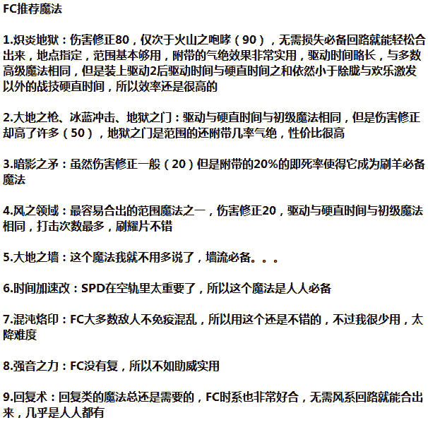
下面依旧是每人的回路配法囧解：
约修亚：FC时期的回路真是相当不错，5-2链双时限定，驱动2由于当时只有3级回路属性值并不显鸡肋，正好短链放攻击，长链合魔法。小约的裸ATS仅次于公主王子，与雪拉相同，而且战技不错，双连击强力菜刀输出，绝影/魔眼强制命中+范围AT DELAY，漆黑之牙惟一的全屏S技，可以说是物魔双修的典型
序章和一章小约可以轻松合出暗影之矛（没有耀片开孔合回路就去刷羊，序章可以把小艾小约雪拉的孔全开并且塞满回路），这里HP1到一章换成精神1
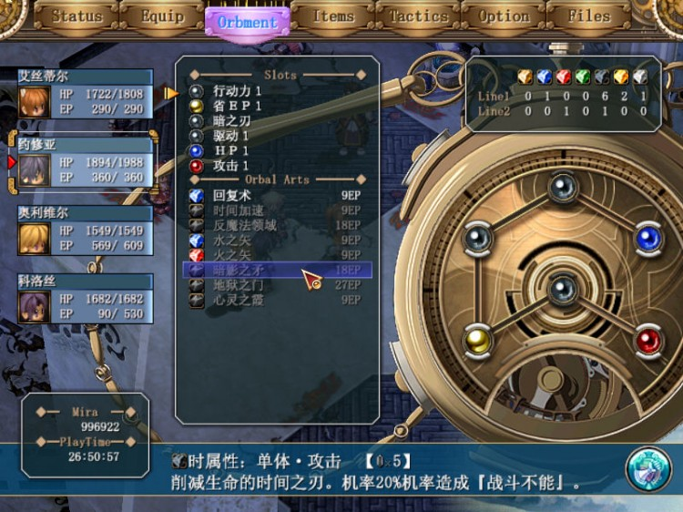
小约是最早能合出炽炎地狱的人，二章用鹰目就可以
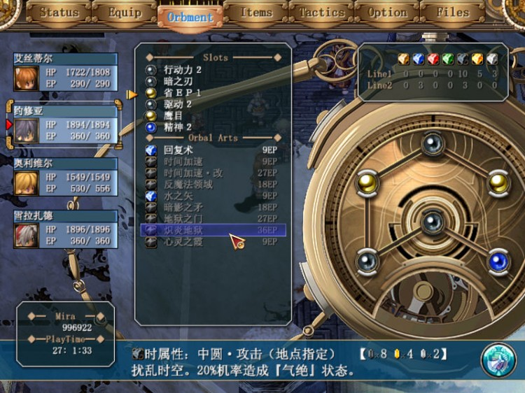
三章、终章其实配法差不多，只是回路升级了三章开始小约就可以多出孔放攻击了，小约FC时期魔眼/绝影强制命中，死之刃1+魔眼刷羊相当不错
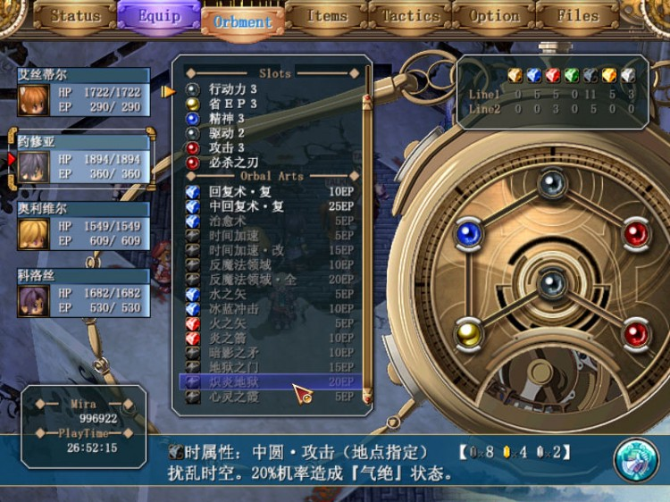
用小约放墙有点浪费啊
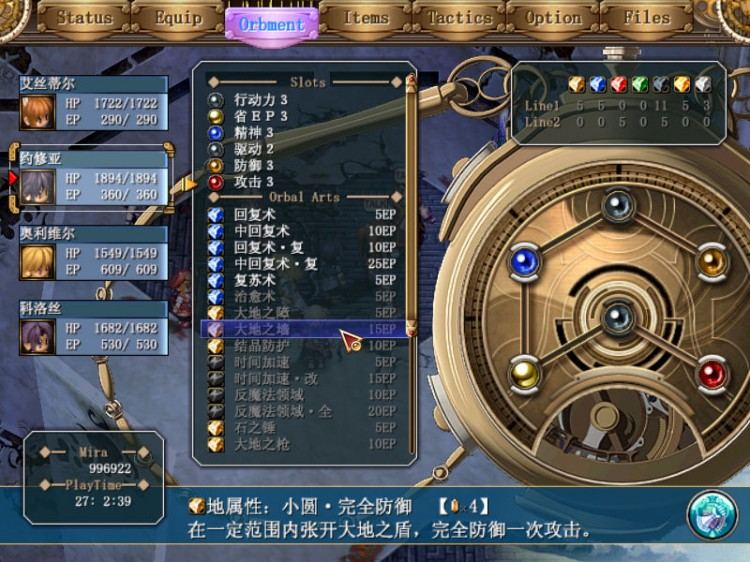
艾斯蒂尔：FC时期导力器4-3链不如小约，到SC小艾回路链无限制的优点就显现出来了，比小约好了很多，小艾各项数值中庸，在FC,SC主要是辅助，至于偏菜刀还是偏法师看个人喜好和队伍中其他人的配置
序章和一章暗影之矛合法，一章HP1换成精神1
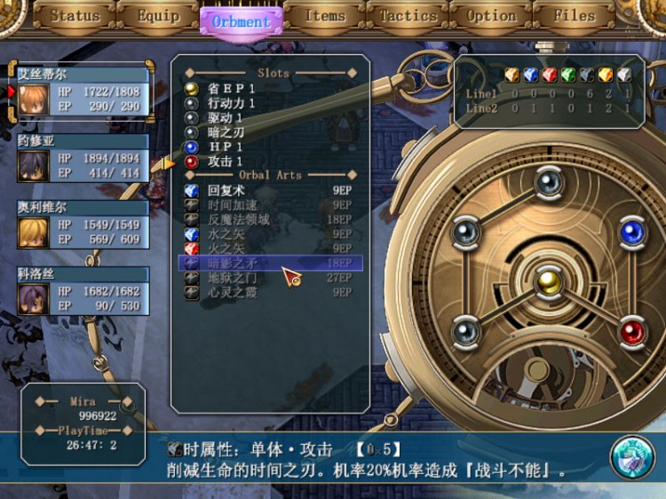
小艾三章开始可以合出炽炎地狱
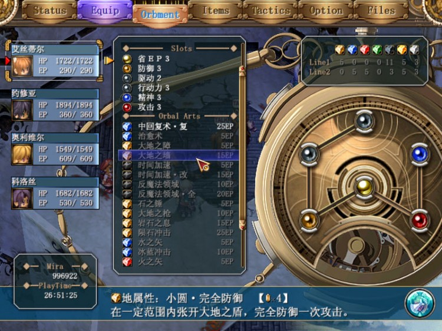
雪拉：FC时期导力链一般，5-2链双风限定，由于风系回路在FC不是必备，双风限定显得鸡肋，但是雪拉的一招天堂之吻就决定了她从FC到3RD的BUG人物地位
序章某支线任务可以拿妨害2，雪拉可以合出风之领域，之后就风之领域一直用到能合出炽炎地狱吧，刷羊时换成暗影之矛,有了精神后把攻击换成精神
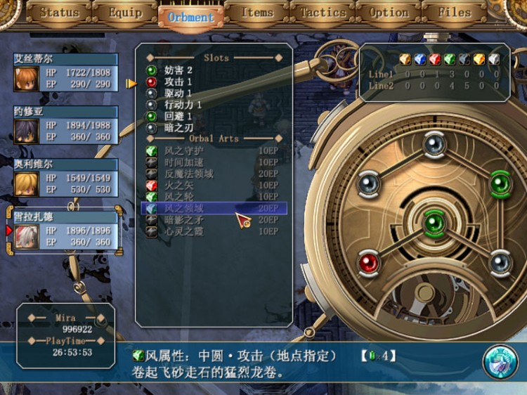
其实美臭这个回路潜力无限。。。
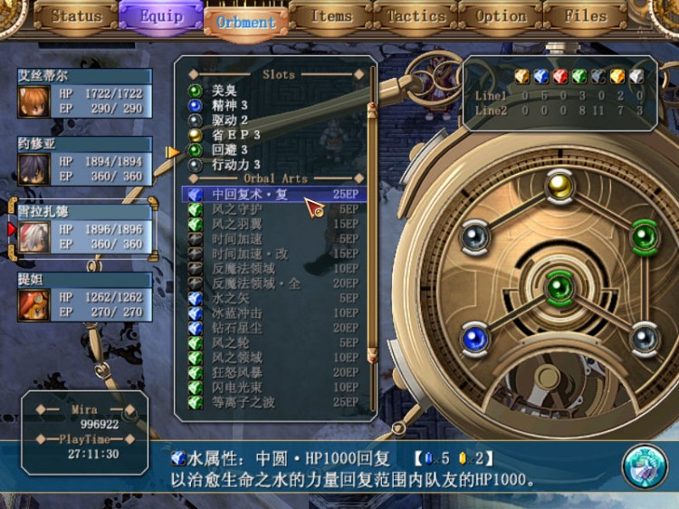
科洛丝：FC时期导力器虽是一链，但是3水限定使得公主的回路配法十分单一，二章出不了炽炎，魔攻主要靠冰蓝，终章可以合出炽炎，公主的斗魂和光明在FC时期都是相当实用的战技，特别是斗魂
配法单一，只有天台洛伦斯战可以把省EP3换成妨害3
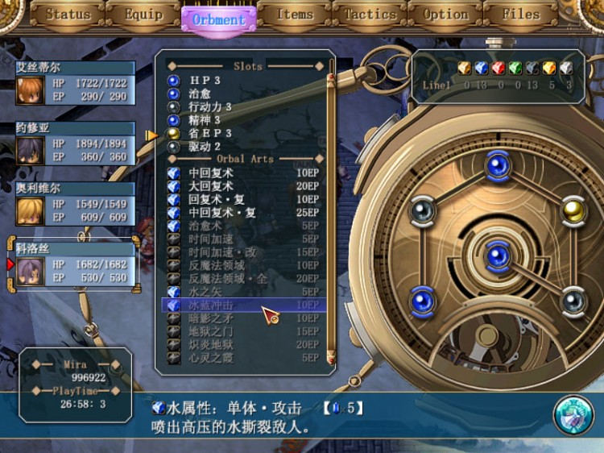
王子：一链幻限定，自由度比公主高了许多，ATS与公主相同，是全员最高，战技虽比不上公主，在FC也还算实用
一章以合出地狱之门为优先，石化之刃配合他的范围技清小怪不错，想合更多魔法可以把石化之刃换掉
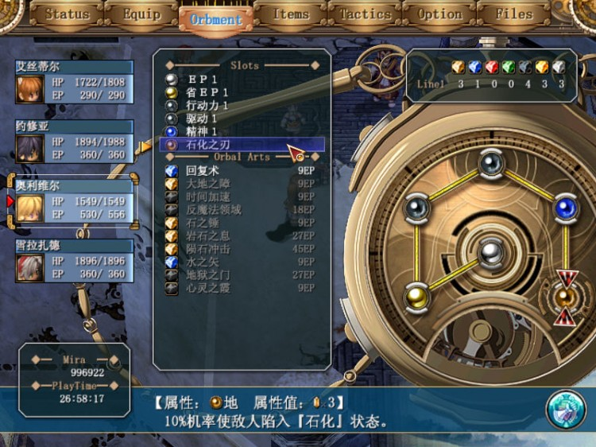
王子一章也能合混沌烙印
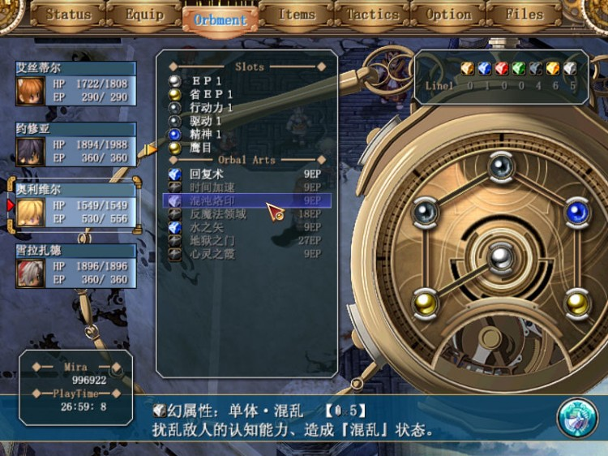
终章王子配法,其实到终章几个法系角色的配法都差不多，都是炽炎+回复复+冰蓝，想放墙就用防御3合出大地之墙+大地之枪，想双修的就放个攻击

提妲：菜刀LOLI一只，回复弹、烟幕弹都很实用，只是血少了些,回路就按菜刀的来吧，刷羊时合个暗影之矛，或者普攻+命中3+死之刃
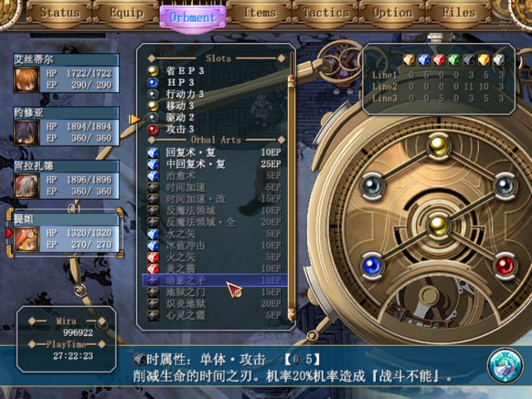
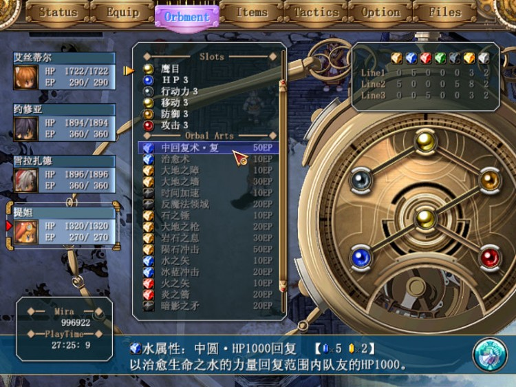
阿加特：纯菜刀一只，战技中螺旋、龙骑ST长达50...比别人放2个魔法的时间还长...果然是重剑，公牛之怒FC只加50CP，实用度一般
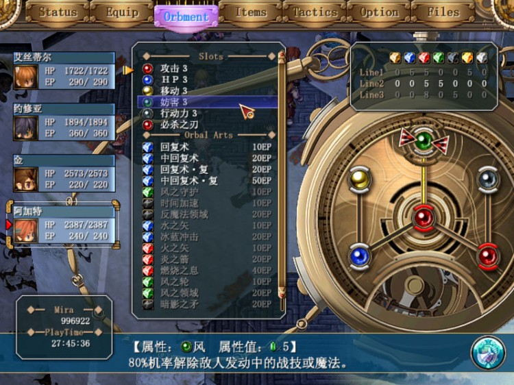
金：纯菜刀一只，龙神FC加STR/DEF是30%，算一般，地限定在FC没什么问题，既然是菜刀孔空着也没什么问题,如果打算用他放墙就加个驱动2
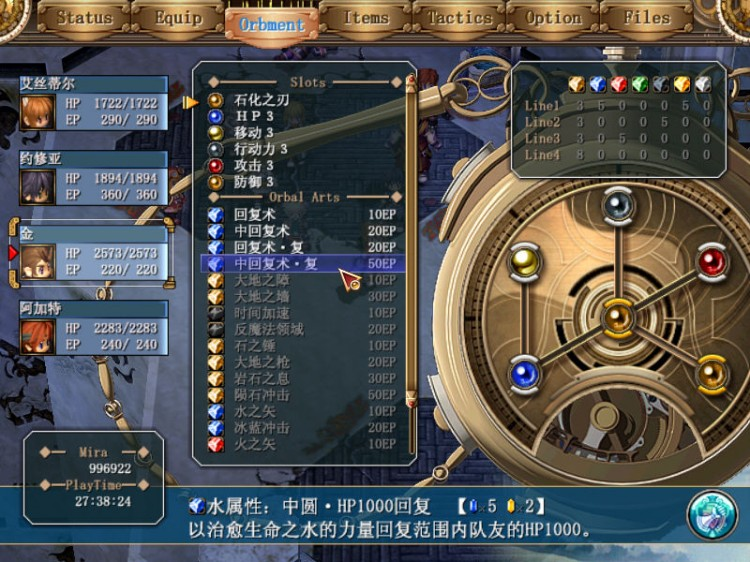